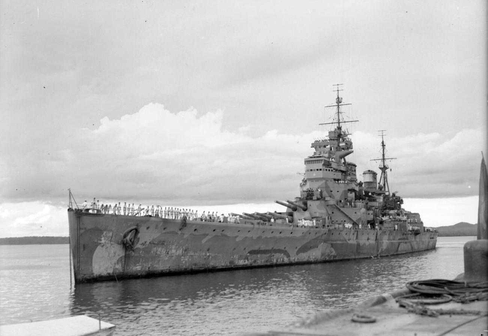

Należące do Royal Navy pancerniki z okresu drugiej wojny światowej. Zbudowano pięć okrętów tego typu, z których jeden zatopiono podczas działań wojennych. W skrócie określane jako typ KGV (ang. KGV class).
W 1922 roku po wejściu w życie traktatu waszyngtońskiego Wielka Brytania została zobowiązana do znacznego ograniczenia zbrojeń morskich. Zgodnie z postanowieniami traktatu Royal Navy otrzymała w 1927 i 1930 roku dwa pancerniki typu Nelson. Traktat przestawał obowiązywać w 1936 roku i w związku z coraz bardziej napiętą sytuacją międzynarodową przewidywano, że nie zostanie przedłużony. Przewidując taki rozwój wypadków, w Wielkiej Brytanii opracowano projekt nowych pancerników, które mogłyby wejść do produkcji natychmiast po wygaśnięciu traktatów rozbrojeniowych. Nowe okręty miały mieć artylerię główną składającą się z dział kalibru 356 milimetrów i niespotykane na okrętach tej wielkości silne opancerzenie.
Początkowo główny okręt miał otrzymać nazwę: King George VI, zgodnie z tradycją nazywania pierwszego pancernika zbudowanego po objęciu tronu przez nowego monarchę jego imieniem, lecz król Jerzy VI wyraził życzenie, aby nazwać pancernik imieniem jego ojca Jerzego V. Pozostałe okręty miały nosić nazwy: Prince of Wales (książę Walii), Anson, Jellicoe i Beatty, ale z uwagi na decyzję króla, przemianowano Anson na Duke of York (książę Yorku), od jego tytułu przed objęciem tronu, a z kolei nazwy od nazwisk admirałów z I wojny światowej Jellicoe i Beatty′ego uznano za kontrowersyjne. W konsekwencji, nazwę Anson (od admirała Ansona) przeniesiono w lutym 1940 roku na budowany Jellicoe, a Beatty otrzymał nazwę Howe, od admirała Howe.
Budowa pierwszego okrętu serii, który nazwano HMS King George V, rozpoczęła się 1 stycznia 1937 roku w stoczni Vickers-Armstrong. Wodowanie okrętu nastąpiło 21 lutego 1939 roku, a wejście do służby – 11 grudnia 1940 roku. Podczas drugiej wojny światowej okręty typu wykorzystywano głównie do ochrony szlaków żeglugowych przed atakami dużych niemieckich okrętów nawodnych. Okręty typu działały także w rejonie Pacyfiku, gdzie jeden z nich, HMS Prince of Wales, zatonął w starciu z japońskim lotnictwem. Po wojnie pozostałe okręty wycofano ze służby i złomowano do 1958 roku.
| Klasa | Pancernik |
| Typ | King George V |
| Wodowanie | 21.02.1939 |
| Zezłomowany | 1958 |
| Długość | 227.2m |
| Szerokość | 31.4m |
| Wyporność | 38 600t |